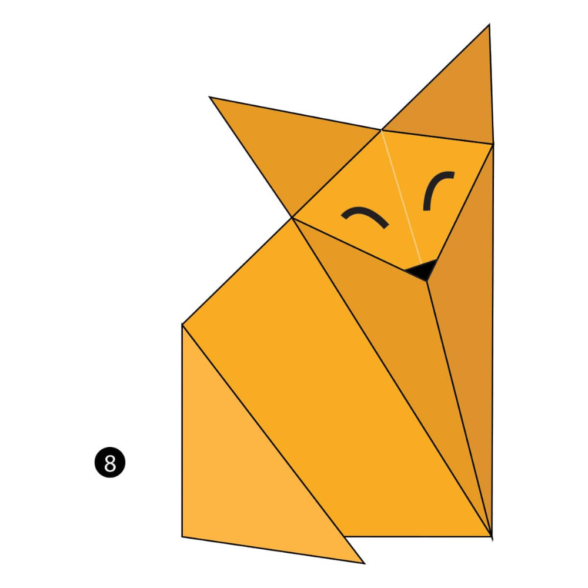

Step by Step diagrams are probably the most popular and easiest to follow way to show how to fold things out of paper.
Trying to find good origami instructions on the internet can be lot of work though. To help your search we have put
together the largest database of free origami digrams on the internet.

Fox
- Foxes live in underground dens
- Foxes have impeccable hearing
- Foxes make 40 different sounds

Rabbit
- Rabbits are very social creatures that live in groups.
- Rabbits perform an athletic leap, known as a 'binky', when they're happy — performing twists and kicks in mid air!
- A rabbit's teeth never stop growing!
Penguin
- Penguins may huddle together for several reasons.
- Penguins evolved to fly underwater.
- A group of penguins in the water is called a raft but on land they're called a waddle!

Squirrel
- Squirrels can find food buried beneath a foot of snow
- A squirrel's front teeth never stop growing.
- Squirrels may pretend to bury a nut to throw off potential thieves.
Bear
- Bears grieve deeply for others
- Bears have excellent senses of smell, sight and hearing.
- Some species of Asiatic bear build nests in the trees.